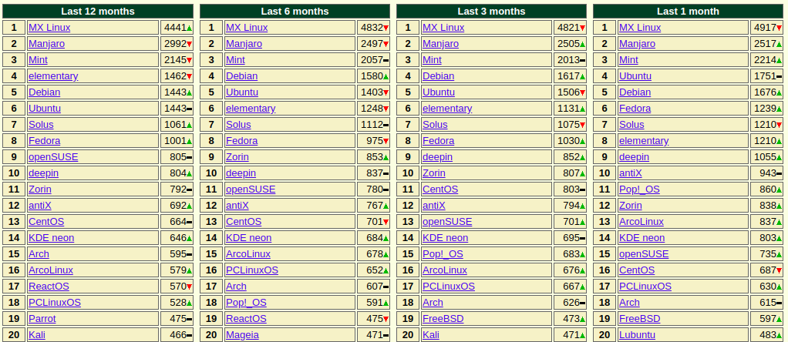

第一章 Linux 概述¶
1.1 认识 Linux¶
什么是 Linux¶
在我们的日常生活中，我们可能已经在使用各种各样的操作系统了。比如桌面操作系统 Windows、MacOS等，手机操作系统 Android、iOS 等。Linux 从严格意义上来说并不是一种操作系统，而是内核（kernel）。比如我们刚刚所提到的手机操作系统 Android 使用的就是 Linux 内核。虽然我们在日常生活中很难听到或见到 Linux，但是只要深入了解后就能发现 Linux 在我们的生活中无处不在。Linux 广泛应用在嵌入式系统上，如手机、平板电脑、路由器、电视和电子游戏机等。
Linux 内核是由林纳斯.托瓦兹在1991年10月5日首次发布。Linux 内核遵循 GNU 通过公共许可证（GPL），任何个人和机构都可以自由使用 Linux 的所有底层源代码，也可以自由的修改和发布。所以一些组织、团体、公司或者个人制作并发行了各种不同的Liunx发行版，也就是我们所说的“Linux 操作系统”，而Linux内核主要作为Linux发行版的一部分来使用。较为知名的Linux发行版本有Debian、Ubuntu、Fedora、RadHat、openSUSE 和 CentOS 等。
Linux 最初是作为支持 Inter x86 架构的个人电脑的一个自由操作系统。当前 Linux 已经被移植到更多的计算机硬件平台，远远超出其他任何操作系统。Linux 可以运行在服务器和其他大型平台之上，如大型计算机和超级计算机。世界上最快的前10名超级电脑运行都是基于 Linux 内核的操作系统。世界上500个最快的超级计算机90%以上运行 Linux 发行版或变种。
在超级计算机、工作站或服务器上运行的 Linux 发行版在大多数情况下并不需要图形桌面界面，使用者或运维管理员只需要通过终端来使用操作系统。在个人主机或笔记本中，我们不一定需要 Linux 发行版为我们提供一个图形桌面界面来管理和使用操作系统。又因为 Linux 内核的开放性，可供我们使用的图形桌面界面有很多，如 GNOME、MATE、KED Plasma、Xfce 和 LXDE 等。所以各种 Linux 发行版也为我们提供了包含了各种不同图形桌面界面与开放软件的版本。
在 Windows 系统中，我们安装了各种各种的软件来帮助我们办公或者娱乐。在 Linux 系统中也有相对应的自由软件，比如发送邮件使用的 Mozilla Thunderbird，办公使用的 LibreOffice、OpenOffice、金山 WPS等，浏览器有 Google Chrome、Mozilla Firefox等。如果你想通过 Linux 系统来办公或者娱乐而非运行一个公共服务，也是完全可行的。
如何学习 Linux¶
在上一个小节我们提到了很多 Linux 发行版。首先我们需要明确一个方向，就是找到一个适合我们学习的 Linux 发行版。本书的目的是为让大家了解一些在 Linux 系统中的基础操作，比如如何创建一个文件、分配一块磁盘空间，编辑一个配置文件等，这些基础操作通常都是在终端中完成的，在 Linux 系统中运行图形界面也会让计算机有额外的开销。建议初学者尽量选择最小化安装，只要可以访问终端即可。在 Linux 系统中，我们一定要习惯以命令的方式执行操作，养成良好的操作习惯。Linux 系统是由各种文件组成的操作系统，精髓在于各种可执行文件（命令），无论图形桌面发展如何，命令行操作方式永远都是不变的。
Linux 系统中的命令有很多抽象的概念和理论，如果我们只是死记硬背下了各种命令，并不理解其中的概念和理论，当我们遇到问题往往还是会束手无策。我们应该在理解概念和理论的基础上，通过大量的实践来帮助我们对所学习到的命令所包含的概念和理论加以论证，这样我们才可以在不同的 Linux 发行版中做到触类旁通，举一反三。
Linux 的商业应用¶
在商业中，它活跃于各种领域，服务器软件、开发、安全、工作流、协同、电子商务、大数据、云和多媒体等等。Linux 系统上可以运行非常丰富的且质量优秀的开放软件，企业可以通过开放软件可以快速、低廉的构建服务，参与丰富且瞬息万变的市场竞争，且无须考虑商业软件的版权问题。所以很多企业和公司更倾向于使用 Linux 系统。
由于Linux系统开放源代码，功能强大、可靠、稳定性强、灵活而且具有极大的伸缩性，再加上它广泛支持大量的微处理体系结构、硬件设备、图形支持和通信协议，因此，在嵌入式应用的领域里，从因特网设备（路由器、交换机、防火墙，负载均衡器）到专用的控制系统（自动售货机，手机，PDA，各种家用电器），Linux操作系统都有很广阔的应用市场。特别是经过这几年的发展，它已经成功地跻身于主流嵌入式开发平台。
1.2 Linux 的发行版本¶
认识 Linux 发行版¶
Linux 发行版是为一般用户预先集成好的 Linux 操作系统及各种应用软件。一般用户不需要重新编译，在直接安装之后，只需要小幅度修改配置就可以使用，通常以软件包管理系统来进行应用软件的管理。Linux 发行版通常包含了图形桌面环境、办公包、多媒体播放器等应用软件。
由于大多数软件包是自由软件和开源软件，所以 Linux 发行版的形式多种多样——从功能齐全的桌面系统以及服务器系统到小型系统（通常在嵌入式设备，或者启动软盘）。除了一些定制软件（如安装和配置工具），发行版通常只是将特定的应用软件安装在一堆函数库和内核上，以满足特定用户的需求。
这些发行版可以分为商业发行版，比如 Ubuntu（Canonical 公司）、Fedora（Red Hat）、openSUSE（Novell）；和社区发行版，他们由自由软件社区提供支持，如 Debian 和 Gentoo。
常见 Linux 发行版本市场份额¶
DistroWatch是全球唯一提供足够Linux发行版信息的网站，有一定的权威性，我们访问 https://distrowatch.com/dwres.php?resource=popularity 可以查看当前世界各种Linux发行版市场份额的排名。
推荐的 Linux 发行版¶
国内，乃至是全世界的Linux用户所最熟悉、最耳闻能详的发行版想必就是Red Hat了。早期的Red Hat版本已停止技术支持，最后一版是 Red Hat 9.0。于是，目前Red Hat分为两个系列：由RedHat公司提供收费技术支持和更新的Red Hat Enterprise Linux，以及由社区开发的免费的Fedora Core。CentOS是来自于Red Hat Enterprise Linux(RHEL)依照开放源代码规定发布的源代码所编译而成。由于出自同样的源代码，因此有些要求高度稳定性的服务器以CentOS替代商业版的Red Hat Enterprise Linux使用。两者的不同在于CentOS并不包含封闭源代码软件。CentOS 对上游代码的主要修改是为了移除不能自由使用的商标。2014年，CentOS宣布与Red Hat合作，但CentOS将会在新的委员会下继续运作，并不受RHEL的影响。
Ubuntu基于Debian发行版和GNOME桌面环境，与Debian的不同在于它每6个月会发布一个新版本（即每年的四月与十月），每2年发布一个LTS长期支持版本。 普通的桌面版可以获得发布后18个月内的支持，标为LTS（长期支持）的桌面版可以获得更长时间的支持。例如，Ubuntu 8.04 LTS（代号Hardy Heron），其桌面应用系列可以获得为期3年的技术支持，服务器版可以获得为期5年的技术支持。
通过这个网址 https://upload.wikimedia.org/wikipedia/commons/1/1b/Linux_Distribution_Timeline.svg 可以看到各种 Linux 发行版的时间线。
本书推荐使用 CentOS 与 Ubuntu 这两种 Linux 发行版:
CentOS 与 Ubuntu 的官方文档完善。网络用户群体基数大，遇到问题在互联网中非常容易搜索到相关的解决方案。
CentOS 与 Ubuntu Linux 发型版非常容易获得。我们从官方或者一些国内镜像站点（清华大学镜像站、上海交通大学镜像站、中国科技大学镜像站等）都可以下载到 CentOS 与 Ubuntu 各种 Linux 发行版的相关介质。
CentOS 与 Ubuntu 应用范围广，具有一定代表性。国内的互联网公司服务器中多采用 CentOS 或 Ubuntu 作为操作系统。学会使用 CentOS 或 Ubuntu，在以后的工作中可以快速融入企业的工作环境，也可以触类旁通，其他的 Linux 发行版也可以快速掌握。
1.3 安装 CentOS¶
从安装介质入手¶
.iso是电脑上光盘镜像（CD Mirror）的存储格式之一，因为其是根据ISO-9660有关CD-ROM文件系统标准存储的文件，所以通常在电脑中以后缀.iso命名，俗称iso镜像文件。它形式上只有一个文件，可以真实反映光盘的内容，可由刻录软件或者镜像文件制作工具创建。.iso和我们熟识的.zip压缩包非常类似，在windows环境下，我们可以将计算机中的文件、文件夹通过WinRAR压缩成为.zip压缩包，而刻录软件（如UItraISO）则可以将光盘中的文件、文件夹“压缩“成为.iso文件（用提取也许更为合适，因为前后两者大小几乎相同）。尽管.iso文件也可以通过WinRAR进行解压，但是对于的特殊.iso文件这样的操作会使得其失去其特殊功能。像系统光盘刻录成的.iso文件（如Windows安装光盘），通过WinRAR解压则会使其失去安装系统的功能，普通数据类文件“压缩“成的.iso文件，如音频，视频，文档，通过WinRAR解压并没有影响。
常见的刻录软件有 UltraISO 软碟通、PowerISO 和 balenaEtcher 等。UltraISO 与 PowerISO 可以免费试用，但是试用更高级的功能需要付费，而 balenaEtcher 则是开源软件，可以免费试用。所以这里我们演示如何通过 balenaEtcher 制作一个 CentOS 启动U盘。
首先打开网址 https://www.balena.io/etcher/：

选择当前操作系统相关下载，下面以 Windows 操作系统举例：

下载完成后安装 balenaEtcher。
注解
Installer 为安装版本，在Windows系统中有注册表注入，Portable 为免安装便携版本。请根据自己的需求进行选择下载。
进行安装：
点击“我同意”进行安装。

安装完成后，点击桌面图标“balenaEtcher”可以看到如下界面：

当我们安装完成刻录工具之后，需要准备一个U盘，并且下载好需要刻录的.iso文件。我们可以去CentOS 官方网站获取 .iso 文件，也可以通过国内镜像站获取 .iso 文件。这里我提供国内清华大学镜像站 CentOS 8 1905 下载链接 https://mirrors.tuna.tsinghua.edu.cn/centos/8/isos/x86_64/。点击以 .iso 后缀结尾的文件链接即可下载到本地。
进行刻录
点击 “Select image” 选择需要刻录的 .iso 文件：
点击 “Select target” 选择存储介质：
点击 “Flash！” 进行刻录：
至此，我们就制作完成了一个 CentOS 系统引导安装U盘。

{kind=link}